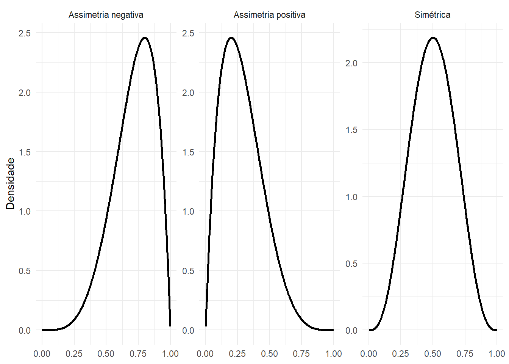
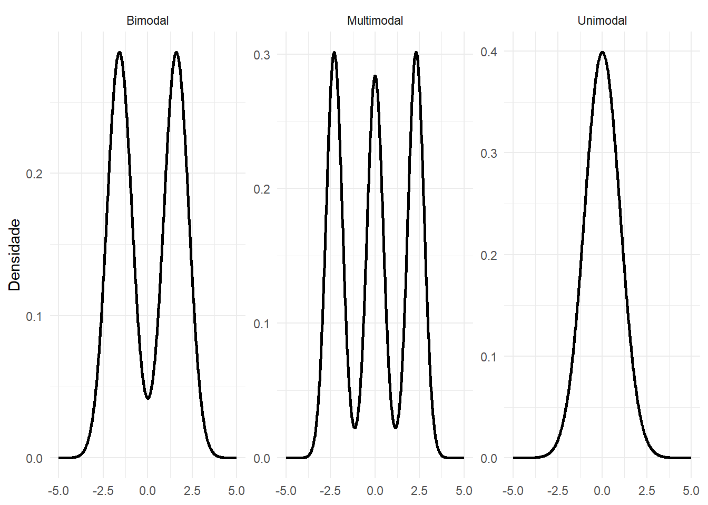
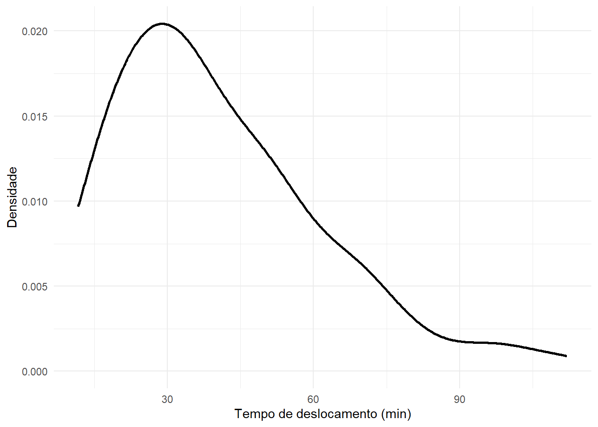
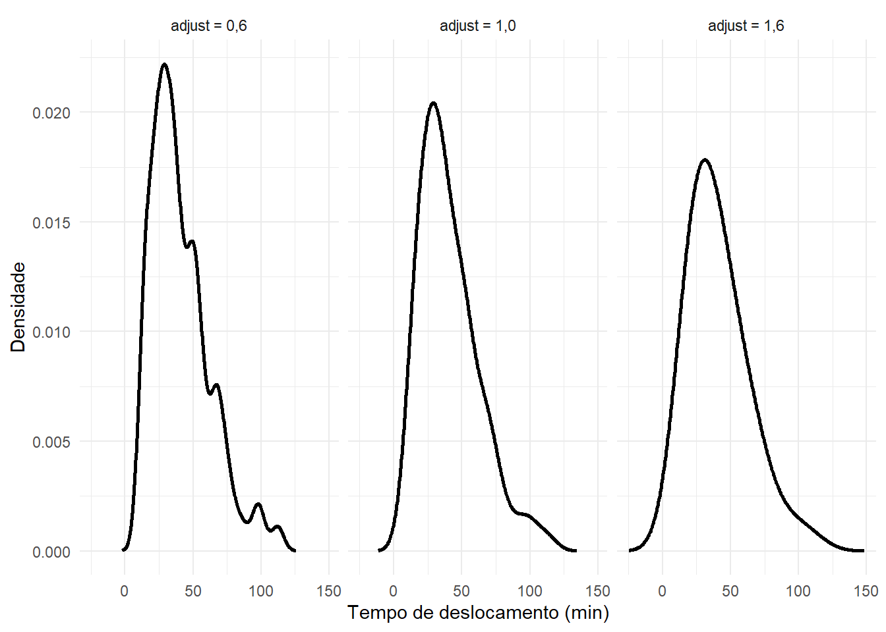
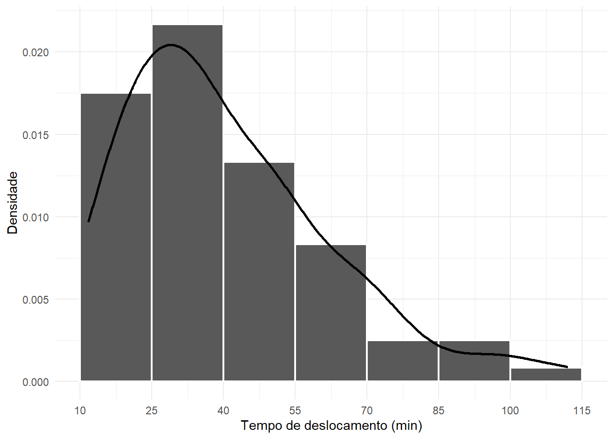
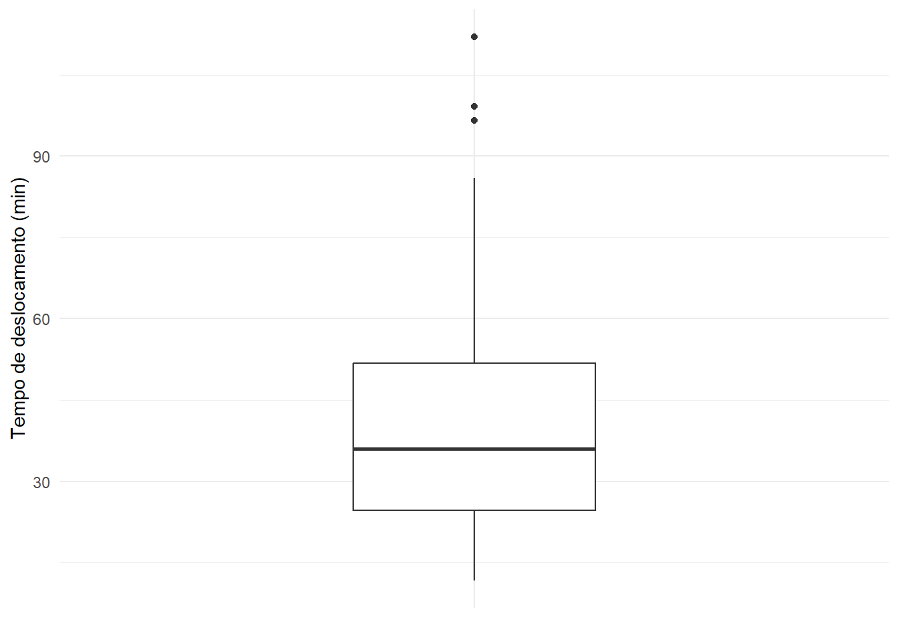
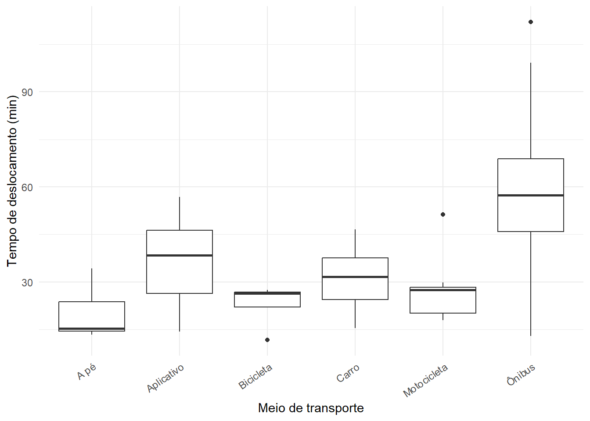

8 Forma das distribuições e análise univariada integrada
Nos capítulos anteriores, estudamos diferentes maneiras de descrever uma variável quantitativa. As medidas de tendência central indicam onde os dados se concentram; as medidas de posição localizam observações em relação à distribuição; e as medidas de dispersão quantificam o grau de variabilidade.
Essas informações são fundamentais, mas ainda não respondem completamente a uma pergunta importante:
Qual é a forma da distribuição dos dados?
Duas distribuições podem apresentar médias e desvios padrão semelhantes e, ainda assim, possuir formas bastante diferentes. Uma pode ser aproximadamente simétrica, outra pode apresentar uma longa cauda à direita; uma pode possuir apenas uma região de concentração, enquanto outra pode apresentar dois ou mais agrupamentos.
Neste capítulo, estudaremos simetria, assimetria positiva e negativa, diferentes coeficientes de assimetria, curtose, unimodalidade, bimodalidade e multimodalidade. Ao final, reuniremos centro, posição, dispersão, forma e representações gráficas em uma análise exploratória univariada integrada.
O objetivo não é transformar a análise em uma sequência mecânica de números. Queremos aprender a construir uma descrição estatística coerente, na qual medidas e gráficos sejam interpretados em conjunto e no contexto da variável estudada.
8.1 Forma de uma distribuição
A forma de uma distribuição descreve como as observações se organizam ao longo dos valores possíveis da variável.
Ao examinar a forma, podemos perguntar:
- a distribuição é aproximadamente simétrica?
- existe uma cauda mais longa à direita ou à esquerda?
- há uma única região de maior concentração?
- existem dois ou mais agrupamentos?
- as caudas apresentam valores muito afastados da região central?
- medidas como média e desvio padrão representam adequadamente os dados?
A forma não deve ser analisada apenas por meio de um número. Histogramas, curvas de densidade, boxplots e medidas resumo fornecem informações complementares.
A Tabela 8.1 apresenta as principais dimensões que estudamos até aqui.
| Dimensão | Pergunta principal | Exemplos de medidas ou gráficos |
|---|---|---|
| Centro | Onde os dados se concentram? | média, mediana, moda |
| Posição | Onde determinados valores se localizam? | quartis, decis, percentis |
| Dispersão | Quanto os dados variam? | amplitude, AIQ, desvio padrão, DAM |
| Forma | Como a distribuição se organiza? | assimetria, curtose, modalidade |
| Valores extremos | Existem observações que merecem investigação? | boxplot, limites pela AIQ |
| Representação gráfica | O que a estrutura visual revela? | histograma, densidade, boxplot |
Como mostra a Tabela 8.1, uma análise univariada completa combina diferentes perspectivas. Nenhuma medida isolada descreve toda a distribuição.
8.2 Simetria e assimetria
Uma distribuição é simétrica quando suas duas partes, em torno de uma região central, apresentam comportamento aproximadamente semelhante.
Em uma distribuição perfeitamente simétrica, valores localizados à mesma distância do centro aparecem de forma equilibrada nos dois lados.
Quando esse equilíbrio não ocorre, dizemos que a distribuição apresenta assimetria.
8.2.1 Distribuição simétrica
Em uma distribuição simétrica e unimodal, é comum observar aproximadamente
\[\text{média} \approx \text{mediana} \approx \text{moda}.\]
Essa relação é especialmente útil como referência descritiva.
8.2.2 Assimetria positiva
Uma distribuição apresenta assimetria positiva, ou assimetria à direita, quando a cauda direita é mais prolongada.
Valores relativamente grandes podem deslocar a média para a direita. Por isso, em distribuições unimodais com esse comportamento, é frequente observar
\[\text{moda} < \text{mediana} < \text{média}.\]
8.2.3 Assimetria negativa
Uma distribuição apresenta assimetria negativa, ou assimetria à esquerda, quando a cauda esquerda é mais prolongada.
Valores relativamente pequenos podem deslocar a média para a esquerda. Assim, em muitas distribuições unimodais desse tipo,
\[\text{média} < \text{mediana} < \text{moda}.\]
A Figura 8.1 apresenta representações esquemáticas dessas três situações.
Na Figura 8.1, a direção da assimetria é nomeada de acordo com a cauda mais prolongada, e não com a região onde se concentra a maior parte das observações.
A relação entre média, mediana e moda é uma orientação, não uma regra universal
As relações
\[\text{moda}<\text{mediana}<\text{média}\]
e
\[\text{média}<\text{mediana}<\text{moda}\]
são padrões frequentemente observados em distribuições unimodais assimétricas, mas não constituem identidades matemáticas válidas para qualquer conjunto de dados.
A forma deve ser verificada também por representações gráficas e, quando apropriado, por medidas de assimetria.
8.2.4 Propriedades relacionadas à simetria
Algumas ideias importantes devem ser guardadas:
- toda distribuição perfeitamente simétrica, quando os momentos necessários existem, possui coeficiente de assimetria por momentos igual a zero;
- o contrário não é necessariamente verdadeiro: assimetria igual a zero não garante simetria perfeita;
- a média é mais sensível a valores extremos do que a mediana;
- por isso, a diferença entre média e mediana pode fornecer uma pista sobre assimetria, mas não deve ser usada isoladamente como diagnóstico definitivo.
Laboratório no R — primeiras pistas sobre a forma
Vamos examinar o tempo de deslocamento dos 80 estudantes.
Primeiro, compare média e mediana:
Código
mean(
dados$tempo_deslocamento_min,
na.rm = TRUE
)[1] 40.76125Código
median(
dados$tempo_deslocamento_min,
na.rm = TRUE
)[1] 36A média é superior à mediana. Isso é compatível com uma possível assimetria positiva, mas ainda precisamos observar a distribuição.
Código
dados |>
ggplot(
aes(x = tempo_deslocamento_min)
) +
geom_histogram(
aes(y = after_stat(density)),
binwidth = 15,
boundary = 10,
closed = "left",
color = "white",
linewidth = 0.8
) +
geom_density(
linewidth = 1
) +
scale_x_continuous(
breaks = seq(10, 115, by = 15)
) +
labs(
x = "Tempo de deslocamento (min)",
y = "Densidade"
) +
theme_minimal()
A Figura 8.2 permite observar concentração nos tempos menores e intermediários e uma extensão da distribuição em direção aos valores mais altos. Essa evidência gráfica deve ser combinada com medidas numéricas de assimetria.
8.3 Coeficientes de assimetria
A inspeção visual é essencial, mas podemos complementar a análise utilizando coeficientes de assimetria.
Existem diferentes maneiras de quantificar assimetria. Elas não são equivalentes, pois utilizam aspectos distintos dos dados.
Neste capítulo, estudaremos:
- coeficientes de Pearson;
- coeficiente quartílico de Bowley;
- coeficiente de assimetria baseado em momentos.
8.3.1 Primeiro coeficiente de Pearson
Uma forma clássica é comparar média e moda:
\[A_{P1} = \frac{ \bar{x}-Mo }{ s },\]
em que \(Mo\) representa a moda e \(s\) o desvio padrão amostral.
A ideia é simples: quanto maior a diferença entre média e moda em relação ao desvio padrão, maior a indicação de assimetria.
Entretanto, esse coeficiente possui uma limitação importante: a moda pode ser pouco estável ou difícil de definir, especialmente para variáveis quantitativas contínuas.
8.3.2 Segundo coeficiente de Pearson
Uma alternativa utiliza média e mediana:
\[A_{P2} = \frac{ 3(\bar{x}-Md) }{ s }.\]
Sua interpretação básica é:
- \(A_{P2}>0\): indicação de assimetria positiva;
- \(A_{P2}\approx0\): pouca assimetria segundo esse critério;
- \(A_{P2}<0\): indicação de assimetria negativa.
O segundo coeficiente de Pearson é simples e útil didaticamente, mas depende da média e do desvio padrão e, portanto, é sensível a valores extremos.
8.3.3 Coeficiente quartílico de Bowley
Uma alternativa baseada em medidas resistentes é o coeficiente de Bowley:
\[A_B = \frac{ Q_3+Q_1-2Q_2 }{ Q_3-Q_1 },\]
em que \(Q_2\) é a mediana.
Também podemos escrevê-lo como
\[A_B = \frac{ (Q_3-Q_2)-(Q_2-Q_1) }{ Q_3-Q_1 }.\]
Essa forma evidencia que o coeficiente compara o espalhamento acima e abaixo da mediana dentro da metade central da distribuição.
Quando \(Q_3>Q_1\),
\[-1\leq A_B\leq1.\]
De modo geral:
- \(A_B>0\): a metade central tende a se estender mais para a direita;
- \(A_B=0\): os quartis são simétricos em torno da mediana;
- \(A_B<0\): a metade central tende a se estender mais para a esquerda.
Como depende de quartis e mediana, o coeficiente de Bowley é mais resistente a valores extremos.
8.3.4 Coeficiente de assimetria por momentos
Para uma população finita, o terceiro momento central é
\[\mu_3 = \frac{1}{N} \sum_{i=1}^{N} (x_i-\mu)^3.\]
O coeficiente populacional de assimetria é
\[\gamma_1 = \frac{ \mu_3 }{ \sigma^3 }.\]
O cubo preserva o sinal dos desvios:
- desvios positivos contribuem positivamente;
- desvios negativos contribuem negativamente.
Consequentemente,
- \(\gamma_1>0\) indica assimetria positiva;
- \(\gamma_1=0\) indica terceiro momento central nulo;
- \(\gamma_1<0\) indica assimetria negativa.
Para uma amostra, podemos definir
\[m_r = \frac{1}{n} \sum_{i=1}^{n} (x_i-\bar{x})^r.\]
O coeficiente amostral não ajustado é
\[g_1 = \frac{ m_3 }{ m_2^{3/2} }.\]
Uma versão ajustada, frequentemente denominada coeficiente ajustado de Fisher-Pearson, é
\[G_1 = \frac{ \sqrt{n(n-1)} }{ n-2 } g_1, \qquad n>2.\]
Por que existem vários coeficientes?
Assimetria é uma característica da forma que pode ser resumida de maneiras diferentes.
Pearson compara medidas de centro; Bowley utiliza quartis; o coeficiente por momentos utiliza todos os valores e dá peso elevado a observações afastadas do centro.
Por isso, resultados de diferentes coeficientes não precisam coincidir numericamente.
8.3.5 Exemplo
Considere
\[2,\ 3,\ 3,\ 4,\ 5,\ 6,\ 12.\]
Temos:
\[\bar{x}=5, \qquad Md=4, \qquad Mo=3.\]
A presença do valor 12 prolonga a distribuição para a direita. Assim,
\[Mo<Md<\bar{x},\]
o que é compatível com assimetria positiva.
A Tabela 8.2 compara as principais características dos coeficientes apresentados.
| Coeficiente | Informação utilizada | Sensibilidade a extremos | Observação |
|---|---|---|---|
| Pearson 1 | média, moda e desvio padrão | alta | depende de uma moda bem definida |
| Pearson 2 | média, mediana e desvio padrão | alta | simples e fácil de interpretar |
| Bowley | \(Q_1\), mediana e \(Q_3\) | baixa | descreve a assimetria da metade central |
| Momentos | todos os valores | alta | considera fortemente as caudas |
Como mostra a Tabela 8.2, a escolha do coeficiente depende do aspecto da distribuição que se deseja enfatizar.
8.3.6 Propriedades dos coeficientes de assimetria
Os coeficientes padronizados de assimetria são adimensionais.
Se
\[Y=a+bX,\]
então, para o coeficiente por momentos:
- se \(b>0\), a assimetria não se altera;
- se \(b<0\), o sinal da assimetria é invertido.
Ou seja,
\[\gamma_1(Y) = \operatorname{sgn}(b)\gamma_1(X).\]
Adicionar uma constante desloca a distribuição, mas não muda sua forma. Multiplicar por uma constante positiva apenas modifica a escala.
Valor zero não garante simetria
Uma distribuição simétrica possui assimetria por momentos igual a zero, mas uma distribuição assimétrica também pode, em situações particulares, apresentar terceiro momento central igual a zero.
Portanto, o coeficiente deve ser interpretado em conjunto com gráficos e outras medidas.
Laboratório no R — coeficientes de assimetria
Começaremos com o conjunto utilizado no exemplo.
Código
x <- c(2, 3, 3, 4, 5, 6, 12)
mean(x)[1] 5Código
median(x)[1] 4A moda é 3. Assim, o primeiro coeficiente de Pearson pode ser calculado por:
Código
moda_x <- 3
(
mean(x) - moda_x
) / sd(x)[1] 0.5940885O segundo coeficiente de Pearson é:
Código
3 *
(
mean(x) - median(x)
) /
sd(x)[1] 0.8911328Podemos utilizar a função definida no início do capítulo:
Código
assimetria_pearson2(x)[1] 0.8911328Agora calcularemos o coeficiente de Bowley:
Código
assimetria_bowley(x)[1] 0.2Para o coeficiente por momentos, calcularemos inicialmente \(g_1\):
Código
assimetria_momento(
x,
ajustada = FALSE
)[1] 1.41549E a versão ajustada \(G_1\):
Código
assimetria_momento(
x,
ajustada = TRUE
)[1] 1.834685Os coeficientes são positivos, embora apresentem magnitudes diferentes porque são construídos de maneiras diferentes.
Agora aplique-os ao tempo de deslocamento:
Código
assimetria_pearson2(
dados$tempo_deslocamento_min,
na.rm = TRUE
)[1] 0.6622203Código
assimetria_bowley(
dados$tempo_deslocamento_min,
na.rm = TRUE
)[1] 0.1642066Código
assimetria_momento(
dados$tempo_deslocamento_min,
na.rm = TRUE,
ajustada = TRUE
)[1] 1.060115O coeficiente ajustado por momentos é positivo, reforçando a evidência de uma distribuição com cauda à direita observada na Figura 8.2.
Podemos organizar os resultados em uma tabela.
Código
tab_assimetria_tempo <- tibble(
coeficiente = c(
"Pearson 2",
"Bowley",
"Fisher-Pearson ajustado"
),
valor = c(
assimetria_pearson2(
dados$tempo_deslocamento_min,
na.rm = TRUE
),
assimetria_bowley(
dados$tempo_deslocamento_min,
na.rm = TRUE
),
assimetria_momento(
dados$tempo_deslocamento_min,
na.rm = TRUE,
ajustada = TRUE
)
)
)
cat(
knitr::kable(
tab_assimetria_tempo,
format = "pipe",
digits = 3,
col.names = c(
"Coeficiente",
"Valor"
)
),
sep = "\n"
)Código
cat(
"\n\n: Coeficientes de assimetria para o tempo de deslocamento dos estudantes. \n\n"
)| Coeficiente | Valor |
|---|---|
| Pearson 2 | 0.662 |
| Bowley | 0.164 |
| Fisher-Pearson ajustado | 1.060 |
A Tabela 8.3 mostra que diferentes critérios podem produzir magnitudes distintas. O sinal e a interpretação devem ser combinados com a forma observada nos gráficos.
8.4 Curtose
A curtose é outra característica relacionada à forma da distribuição.
Ela é construída a partir do quarto momento central e é particularmente sensível ao comportamento das caudas e à presença de observações afastadas do centro.
Para uma população finita,
\[\mu_4 = \frac{1}{N} \sum_{i=1}^{N} (x_i-\mu)^4.\]
O coeficiente populacional de curtose é
\[\beta_2 = \frac{ \mu_4 }{ \sigma^4 }.\]
Para a distribuição normal,
\[\beta_2=3.\]
Por isso, é comum trabalhar com o excesso de curtose:
\[\gamma_2 = \beta_2-3.\]
Assim, a distribuição normal possui
\[\gamma_2=0.\]
8.4.1 Classificação tradicional
Utilizando o excesso de curtose como referência:
- \(\gamma_2=0\): distribuição mesocúrtica em relação à normal;
- \(\gamma_2>0\): distribuição leptocúrtica;
- \(\gamma_2<0\): distribuição platicúrtica.
A Tabela 8.4 resume essa nomenclatura.
| Excesso de curtose | Classificação tradicional | Interpretação geral em relação à normal |
|---|---|---|
| \(\gamma_2<0\) | platicúrtica | caudas relativamente mais leves |
| \(\gamma_2=0\) | mesocúrtica | referência da distribuição normal |
| \(\gamma_2>0\) | leptocúrtica | maior contribuição das caudas e de valores extremos |
Como mostra a Tabela 8.4, a referência é a distribuição normal.
Curtose não deve ser interpretada apenas como altura do pico
É comum encontrar a curtose descrita simplesmente como uma medida de “achatamento” ou “pontiagudez” da distribuição. Essa interpretação é incompleta.
Como o coeficiente utiliza a quarta potência dos desvios, valores afastados da média exercem grande influência. Assim, a curtose está fortemente relacionada ao comportamento das caudas e à ocorrência de observações extremas.
A altura do pico, isoladamente, não determina a curtose.
8.4.2 Curtose amostral
Para uma amostra, utilizando
\[m_r = \frac{1}{n} \sum_{i=1}^{n} (x_i-\bar{x})^r,\]
podemos definir o excesso de curtose não ajustado por
\[g_2 = \frac{ m_4 }{ m_2^2 } -3.\]
Uma versão ajustada é
\[G_2 = \frac{n-1}{(n-2)(n-3)} \left[ (n+1)g_2+6 \right], \qquad n>3.\]
Neste capítulo, utilizaremos \(G_2\) no laboratório quando desejarmos um coeficiente amostral ajustado.
8.4.3 Propriedades da curtose
O coeficiente padronizado de curtose:
- é adimensional;
- não se altera com a adição de uma constante;
- não se altera com uma mudança de escala não nula;
- é fortemente sensível a valores extremos, pois utiliza a quarta potência dos desvios.
Se
\[Y=a+bX, \qquad b\neq0,\]
então
\[\beta_2(Y)=\beta_2(X)\]
e, consequentemente,
\[\gamma_2(Y)=\gamma_2(X).\]
Diferentemente da assimetria, multiplicar os dados por uma constante negativa não inverte o sinal da curtose, pois a quarta potência elimina o sinal.
Laboratório no R — excesso de curtose
Utilizaremos a função curtose_excesso() definida no início do capítulo.
Considere novamente:
Código
x <- c(2, 3, 3, 4, 5, 6, 12)O excesso de curtose não ajustado é:
Código
curtose_excesso(
x,
ajustada = FALSE
)[1] 0.8088235A versão ajustada é:
Código
curtose_excesso(
x,
ajustada = TRUE
)[1] 3.741176Agora calcule para o tempo de deslocamento:
Código
curtose_excesso(
dados$tempo_deslocamento_min,
na.rm = TRUE,
ajustada = TRUE
)[1] 1.030975Um valor positivo indica que, segundo esse coeficiente, a distribuição apresenta excesso de curtose positivo em relação à normal. Essa informação é coerente com a presença de observações relativamente afastadas na cauda direita, mas não deve ser interpretada sem examinar os dados.
Para verificar a sensibilidade do coeficiente, compare:
Código
x1 <- c(
10, 11, 12, 13, 14,
15, 16, 17, 18
)
x2 <- c(
10, 11, 12, 13, 14,
15, 16, 17, 50
)
curtose_excesso(
x1,
ajustada = TRUE
)[1] -1.2Código
curtose_excesso(
x2,
ajustada = TRUE
)[1] 8.137921A introdução de um único valor muito afastado pode alterar substancialmente a curtose.
8.5 Modalidade: uma ou várias regiões de concentração
A modalidade descreve quantas regiões principais de concentração aparecem em uma distribuição.
Uma distribuição pode ser:
- unimodal: apresenta uma região principal de maior concentração;
- bimodal: apresenta duas regiões principais;
- multimodal: apresenta mais de duas regiões principais.
A Figura 8.3 apresenta representações esquemáticas.

Na Figura 8.3, cada pico representa uma região de maior concentração.
8.5.1 Por que a bimodalidade é importante?
Uma distribuição bimodal ou multimodal pode indicar que os dados reúnem subgrupos com comportamentos diferentes.
Por exemplo, uma distribuição de tempos de deslocamento poderia apresentar um grupo de estudantes que mora próximo à universidade e outro grupo que mora muito distante.
A presença de dois picos não prova a existência de dois grupos, mas é uma pista que merece investigação.
8.5.2 Moda observada e moda de uma distribuição contínua
Em dados quantitativos contínuos, valores exatamente repetidos podem ser raros. Por isso, procurar apenas o valor que mais se repete pode não revelar adequadamente a estrutura modal.
Histogramas e curvas de densidade ajudam a identificar regiões modais, isto é, regiões onde as observações se concentram.
A modalidade depende da representação
O número de picos percebidos em um histograma pode mudar quando alteramos a largura das classes.
Da mesma forma, em uma curva de densidade, o grau de suavização influencia a quantidade de detalhes visíveis.
Por isso, um pequeno pico não deve ser automaticamente interpretado como evidência de um novo subgrupo.
Laboratório no R — investigando modalidade
Vamos examinar a curva de densidade do tempo de deslocamento.
Código
dados |>
ggplot(
aes(x = tempo_deslocamento_min)
) +
geom_density(
linewidth = 1
) +
labs(
x = "Tempo de deslocamento (min)",
y = "Densidade"
) +
theme_minimal()
A Figura 8.4 ajuda a identificar as principais regiões de concentração, mas sua interpretação depende do grau de suavização utilizado pelo estimador de densidade.
Podemos alterar esse grau por meio do argumento adjust.
Código
x_tempo <- dados$tempo_deslocamento_min
x_tempo <- x_tempo[!is.na(x_tempo)]
dens_06 <- density(
x_tempo,
adjust = 0.6
)
dens_10 <- density(
x_tempo,
adjust = 1
)
dens_16 <- density(
x_tempo,
adjust = 1.6
)
bind_rows(
tibble(
x = dens_06$x,
densidade = dens_06$y,
ajuste = "adjust = 0,6"
),
tibble(
x = dens_10$x,
densidade = dens_10$y,
ajuste = "adjust = 1,0"
),
tibble(
x = dens_16$x,
densidade = dens_16$y,
ajuste = "adjust = 1,6"
)
) |>
ggplot(
aes(x = x, y = densidade)
) +
geom_line(linewidth = 1) +
facet_wrap(
~ ajuste,
nrow = 1
) +
labs(
x = "Tempo de deslocamento (min)",
y = "Densidade"
) +
theme_minimal()
A Figura 8.5 mostra que valores menores de adjust revelam mais irregularidades locais, enquanto valores maiores produzem uma curva mais suavizada. A identificação de modalidade deve, portanto, considerar se os picos são estruturas consistentes ou apenas pequenas oscilações da representação.
8.6 Relações entre centro, posição, dispersão e forma
Os capítulos desta parte da apostila estudaram medidas separadamente para facilitar a aprendizagem. Na análise de dados, entretanto, elas devem ser interpretadas em conjunto.
A Tabela 8.5 apresenta algumas relações úteis.
| Característica observada | Medidas ou gráficos que ajudam | Possível interpretação |
|---|---|---|
| média próxima da mediana | média, mediana, histograma | compatível com pouca assimetria, mas não suficiente para garanti-la |
| média muito maior que mediana | média, mediana, assimetria, histograma | possível cauda à direita |
| média muito menor que mediana | média, mediana, assimetria, histograma | possível cauda à esquerda |
| grande distância entre \(Q_1\) e \(Q_3\) | AIQ, boxplot | maior dispersão da metade central |
| pontos além dos bigodes | boxplot, registros originais | observações potencialmente atípicas |
| desvio padrão muito afetado por extremos | desvio padrão, AIQ, DAM | considerar medidas resistentes |
| dois ou mais picos | histograma, densidade | possível heterogeneidade ou subgrupos |
| excesso de curtose elevado | curtose, boxplot, histograma | forte contribuição das caudas e/ou extremos |
Como mostra a Tabela 8.5, uma conclusão deve ser sustentada por conjunto de evidências, e não por uma única medida.
8.7 Medidas sensíveis e resistentes na análise da forma
A escolha das medidas deve considerar a presença de assimetria e de valores extremos.
A Tabela 8.6 reúne medidas estudadas nos capítulos anteriores e neste capítulo.
| Aspecto | Medidas mais sensíveis | Medidas mais resistentes |
|---|---|---|
| Centro | média | mediana |
| Posição | — | quartis |
| Dispersão | amplitude, variância, desvio padrão, CV | AIQ, DAM |
| Assimetria | Pearson, coeficiente por momentos | Bowley |
| Caudas | curtose por momentos | deve ser complementada por medidas resistentes e gráficos |
A Tabela 8.6 sugere uma estratégia importante: quando uma distribuição apresenta forte assimetria ou valores extremos, é recomendável não depender apenas de média, desvio padrão, assimetria por momentos e curtose.
Nessas situações, mediana, quartis, AIQ, DAM e boxplots oferecem uma perspectiva mais resistente.
8.7.1 Escolha de combinações de medidas
Para uma distribuição aproximadamente simétrica, unimodal e sem extremos relevantes, uma combinação como
\[\text{média} + \text{desvio padrão}\]
pode fornecer uma descrição bastante informativa.
Para uma distribuição assimétrica ou com extremos, frequentemente é mais útil apresentar
\[\text{mediana} + \text{AIQ}\]
ou
\[\text{mediana} + \text{DAM}.\]
Isso não significa que a média e o desvio padrão devam ser ocultados. Em uma análise exploratória, comparar medidas sensíveis e resistentes pode revelar justamente o efeito da assimetria e dos valores extremos.
8.8 Histogramas, boxplots e medidas resumo: funções complementares
O histograma mostra detalhes da distribuição por intervalos. A curva de densidade apresenta uma versão suavizada da forma. O boxplot resume posição, dispersão e valores potencialmente atípicos.
A Tabela 8.7 compara essas representações.
| Representação | Evidencia especialmente | Limitação importante |
|---|---|---|
| Histograma | concentração, caudas, lacunas e possíveis modos | depende da escolha das classes |
| Densidade | forma suavizada e regiões de concentração | depende do grau de suavização |
| Boxplot | mediana, quartis, AIQ e valores potencialmente atípicos | oculta muitos detalhes da forma |
Como mostra a Tabela 8.7, nenhuma das três representações substitui completamente as demais.
Um boxplot não revela multimodalidade
Duas distribuições muito diferentes podem apresentar boxplots semelhantes. Em particular, um boxplot não mostra diretamente se uma distribuição possui um, dois ou vários picos.
Por isso, análises de forma devem incluir pelo menos uma representação que preserve mais detalhes da distribuição, como histograma ou curva de densidade.
8.9 Análise exploratória univariada integrada
Chegamos agora ao objetivo central deste capítulo: reunir os conteúdos estudados em um fluxo coerente de análise.
Uma análise univariada integrada pode seguir a lógica apresentada na Tabela 8.8.
| Etapa | Pergunta | Exemplos de procedimentos |
|---|---|---|
| 1. Contextualização | O que a variável representa? | unidade, tipo, população/amostra |
| 2. Qualidade | Há ausências ou valores implausíveis? | is.na(), inspeção, limites plausíveis |
| 3. Centro | Onde os dados se concentram? | média, mediana, moda |
| 4. Posição | Como os valores se distribuem por quantis? | \(Q_1\), mediana, \(Q_3\), percentis |
| 5. Dispersão | Quanto os dados variam? | amplitude, AIQ, DP, CV, DAM |
| 6. Forma | Há simetria, caudas ou vários picos? | assimetria, curtose, histograma, densidade |
| 7. Extremos | Existem observações a investigar? | boxplot, regra de \(1,5\times AIQ\) |
| 8. Síntese | O que o conjunto de evidências indica? | interpretação contextual integrada |
A Tabela 8.8 apresenta uma sequência útil, mas não rígida. A análise exploratória é iterativa: uma descoberta gráfica pode exigir que retornemos ao banco original, recalculemos medidas ou investiguemos subgrupos.
Laboratório no R — análise completa do tempo de deslocamento
Vamos realizar uma análise exploratória integrada de tempo_deslocamento_min.
8.9.1 1. Conhecendo a variável
Código
dados |>
select(
id_estudante,
tempo_deslocamento_min
) |>
slice_head(n = 10)# A tibble: 10 × 2
id_estudante tempo_deslocamento_min
<chr> <dbl>
1 E001 96.5
2 E002 37.7
3 E003 45.1
4 E004 51
5 E005 112
6 E006 14
7 E007 35.7
8 E008 27.9
9 E009 58.2
10 E010 20 O tempo de deslocamento é uma variável quantitativa contínua medida em minutos.
Vamos verificar o número de observações e valores ausentes:
Código
dados |>
summarise(
n_total = n(),
n_validos =
sum(
!is.na(
tempo_deslocamento_min
)
),
n_ausentes =
sum(
is.na(
tempo_deslocamento_min
)
)
)# A tibble: 1 × 3
n_total n_validos n_ausentes
<int> <int> <int>
1 80 80 08.9.2 2. Construindo um resumo numérico integrado
Primeiro, criaremos um vetor sem valores ausentes:
Código
x_tempo <- dados$tempo_deslocamento_min
x_tempo <- x_tempo[!is.na(x_tempo)]Agora reuniremos medidas de centro, posição, dispersão e forma.
Código
resumo_integrado <- tibble(
medida = c(
"n",
"Mínimo",
"Q1",
"Mediana",
"Média",
"Q3",
"Máximo",
"Amplitude",
"AIQ",
"Variância amostral",
"Desvio padrão amostral",
"CV (%)",
"DAM",
"Assimetria de Pearson 2",
"Assimetria de Bowley",
"Assimetria ajustada de Fisher-Pearson",
"Excesso de curtose ajustado"
),
valor = c(
length(x_tempo),
min(x_tempo),
quantile(
x_tempo,
0.25,
type = 7
),
median(x_tempo),
mean(x_tempo),
quantile(
x_tempo,
0.75,
type = 7
),
max(x_tempo),
diff(range(x_tempo)),
IQR(x_tempo),
var(x_tempo),
sd(x_tempo),
100 *
sd(x_tempo) /
mean(x_tempo),
mad(
x_tempo,
constant = 1
),
assimetria_pearson2(
x_tempo
),
assimetria_bowley(
x_tempo
),
assimetria_momento(
x_tempo,
ajustada = TRUE
),
curtose_excesso(
x_tempo,
ajustada = TRUE
)
)
)
cat(
knitr::kable(
resumo_integrado,
format = "pipe",
digits = 3,
col.names = c(
"Medida",
"Valor"
)
),
sep = "\n"
)Código
cat(
"\n\n: Resumo numérico integrado do tempo de deslocamento dos estudantes. \n\n"
)| Medida | Valor |
|---|---|
| n | 80.000 |
| Mínimo | 11.700 |
| Q1 | 24.675 |
| Mediana | 36.000 |
| Média | 40.761 |
| Q3 | 51.775 |
| Máximo | 112.000 |
| Amplitude | 100.300 |
| AIQ | 27.100 |
| Variância amostral | 465.243 |
| Desvio padrão amostral | 21.569 |
| CV (%) | 52.917 |
| DAM | 13.950 |
| Assimetria de Pearson 2 | 0.662 |
| Assimetria de Bowley | 0.164 |
| Assimetria ajustada de Fisher-Pearson | 1.060 |
| Excesso de curtose ajustado | 1.031 |
A Tabela 8.9 reúne informações que devem ser interpretadas em conjunto. A média superior à mediana, associada aos coeficientes positivos de assimetria, sugere cauda à direita. O desvio padrão relativamente elevado e a diferença entre medidas sensíveis e resistentes também merecem atenção.
8.9.3 3. Histograma e densidade
Código
dados |>
ggplot(
aes(x = tempo_deslocamento_min)
) +
geom_histogram(
aes(y = after_stat(density)),
binwidth = 15,
boundary = 10,
closed = "left",
color = "white",
linewidth = 0.8
) +
geom_density(
linewidth = 1
) +
scale_x_continuous(
breaks = seq(10, 115, by = 15)
) +
labs(
x = "Tempo de deslocamento (min)",
y = "Densidade"
) +
theme_minimal()
A Figura 8.6 evidencia uma distribuição concentrada principalmente nos menores e intermediários tempos de deslocamento, acompanhada por uma cauda que se prolonga para valores maiores.
8.9.4 4. Boxplot
Código
dados |>
ggplot(
aes(
x = "",
y = tempo_deslocamento_min
)
) +
geom_boxplot(
width = 0.35
) +
labs(
x = NULL,
y = "Tempo de deslocamento (min)"
) +
theme_minimal()
A Figura 8.7 complementa o histograma ao destacar mediana, quartis, amplitude interquartílica e observações que ultrapassam os limites usuais do boxplot.
8.9.5 5. Investigando valores potencialmente atípicos
Vamos calcular os limites pela regra de \(1,5\times AIQ\).
Código
q1_tempo <- quantile(
x_tempo,
0.25,
type = 7
)
q3_tempo <- quantile(
x_tempo,
0.75,
type = 7
)
aiq_tempo <- IQR(x_tempo)
limite_inferior <-
q1_tempo - 1.5 * aiq_tempo
limite_superior <-
q3_tempo + 1.5 * aiq_tempo
limite_inferior 25%
-15.975 Código
limite_superior 75%
92.425 Agora identificaremos os registros que ultrapassam esses limites.
Código
atipicos_tempo <- dados |>
filter(
tempo_deslocamento_min <
limite_inferior |
tempo_deslocamento_min >
limite_superior
) |>
arrange(
tempo_deslocamento_min
) |>
select(
id_estudante,
curso,
meio_transporte,
satisfacao,
idade_anos,
faltas,
tempo_deslocamento_min
)
cat(
knitr::kable(
atipicos_tempo,
format = "pipe",
digits = 1,
col.names = c(
"Estudante",
"Curso",
"Transporte",
"Satisfação",
"Idade",
"Faltas",
"Tempo (min)"
)
),
sep = "\n"
)Código
cat(
"\n\n: Observações potencialmente atípicas para o tempo de deslocamento segundo a regra de 1,5 vezes a AIQ. \n\n"
)| Estudante | Curso | Transporte | Satisfação | Idade | Faltas | Tempo (min) |
|---|---|---|---|---|---|---|
| E001 | Química | Ônibus | Alta | 25 | 1 | 96.5 |
| E054 | Matemática | Ônibus | Alta | 30 | 3 | 99.2 |
| E005 | Física | Ônibus | Alta | 19 | 5 | 112.0 |
A Tabela 8.10 identifica os registros que merecem investigação. Como discutido anteriormente, a classificação estatística não significa que esses tempos estejam errados.
8.9.6 6. Comparando medidas sensíveis e resistentes
Código
comparacao_resistencia <- tibble(
perspectiva = c(
"Centro sensível",
"Centro resistente",
"Dispersão sensível",
"Dispersão resistente",
"Dispersão resistente",
"Forma sensível",
"Forma mais resistente"
),
medida = c(
"Média",
"Mediana",
"Desvio padrão",
"AIQ",
"DAM",
"Assimetria por momentos",
"Assimetria de Bowley"
),
valor = c(
mean(x_tempo),
median(x_tempo),
sd(x_tempo),
IQR(x_tempo),
mad(
x_tempo,
constant = 1
),
assimetria_momento(
x_tempo,
ajustada = TRUE
),
assimetria_bowley(
x_tempo
)
)
)
cat(
knitr::kable(
comparacao_resistencia,
format = "pipe",
digits = 3,
col.names = c(
"Perspectiva",
"Medida",
"Valor"
)
),
sep = "\n"
)Código
cat(
"\n\n: Comparação entre medidas sensíveis e resistentes para o tempo de deslocamento. \n\n"
)| Perspectiva | Medida | Valor |
|---|---|---|
| Centro sensível | Média | 40.761 |
| Centro resistente | Mediana | 36.000 |
| Dispersão sensível | Desvio padrão | 21.569 |
| Dispersão resistente | AIQ | 27.100 |
| Dispersão resistente | DAM | 13.950 |
| Forma sensível | Assimetria por momentos | 1.060 |
| Forma mais resistente | Assimetria de Bowley | 0.164 |
A Tabela 8.11 mostra por que uma análise integrada é mais informativa do que a apresentação de uma única estatística.
8.9.7 7. Escrevendo uma interpretação integrada
Com base nas medidas e nos gráficos, uma interpretação poderia seguir a seguinte estrutura:
Os tempos de deslocamento apresentam concentração principal nos valores menores e intermediários, mas a distribuição se prolonga para tempos maiores. A média é superior à mediana e os coeficientes de assimetria indicam assimetria positiva. O boxplot identifica algumas observações na extremidade superior que devem ser investigadas, mas não excluídas automaticamente. A comparação entre desvio padrão, AIQ e DAM mostra que medidas sensíveis e resistentes oferecem perspectivas complementares sobre a variabilidade. Assim, para descrever o centro e a dispersão dessa variável, é recomendável apresentar tanto medidas usuais, como média e desvio padrão, quanto medidas resistentes, como mediana e AIQ, acompanhadas do histograma e do boxplot.
Observe que o parágrafo não apenas repete números: ele transforma resultados estatísticos em uma descrição coerente da distribuição.
8.10 Comparação entre grupos como extensão da análise univariada
Mesmo quando o objetivo principal é analisar uma variável, podemos investigar se sua forma muda entre grupos definidos por outra variável.
Por exemplo, os tempos de deslocamento podem apresentar comportamentos diferentes segundo o meio de transporte.
Laboratório no R — forma da distribuição por grupos
Podemos calcular medidas por meio de transporte.
Código
forma_transporte <- dados |>
group_by(
meio_transporte
) |>
summarise(
n =
sum(
!is.na(
tempo_deslocamento_min
)
),
media =
mean(
tempo_deslocamento_min,
na.rm = TRUE
),
mediana =
median(
tempo_deslocamento_min,
na.rm = TRUE
),
dp =
sd(
tempo_deslocamento_min,
na.rm = TRUE
),
AIQ =
IQR(
tempo_deslocamento_min,
na.rm = TRUE
),
assimetria =
assimetria_momento(
tempo_deslocamento_min,
na.rm = TRUE,
ajustada = TRUE
),
.groups = "drop"
)
cat(
knitr::kable(
forma_transporte,
format = "pipe",
digits = 2,
col.names = c(
"Meio de transporte",
"n",
"Média",
"Mediana",
"DP",
"AIQ",
"Assimetria"
)
),
sep = "\n"
)Código
cat(
"\n\n: Medidas de centro, dispersão e assimetria do tempo de deslocamento segundo o meio de transporte. \n\n"
)| Meio de transporte | n | Média | Mediana | DP | AIQ | Assimetria |
|---|---|---|---|---|---|---|
| A pé | 7 | 19.91 | 15.30 | 7.80 | 9.20 | 1.21 |
| Aplicativo | 14 | 36.90 | 38.35 | 12.61 | 19.92 | -0.27 |
| Bicicleta | 5 | 22.84 | 26.30 | 6.58 | 4.70 | -1.73 |
| Carro | 15 | 31.26 | 31.60 | 9.87 | 13.20 | -0.19 |
| Motocicleta | 9 | 27.50 | 27.50 | 9.90 | 8.20 | 1.95 |
| Ônibus | 30 | 59.14 | 57.35 | 22.03 | 23.00 | 0.36 |
A Tabela 8.12 permite verificar se a relação entre média e mediana e o grau de assimetria são semelhantes entre os grupos. Como alguns grupos possuem poucas observações, os coeficientes de forma devem ser interpretados com cautela.
Também podemos comparar graficamente.
Código
dados |>
ggplot(
aes(
x = meio_transporte,
y = tempo_deslocamento_min
)
) +
geom_boxplot() +
labs(
x = "Meio de transporte",
y = "Tempo de deslocamento (min)"
) +
theme_minimal() +
theme(
axis.text.x = element_text(
angle = 35,
hjust = 1
)
)
A Figura 8.8 evidencia diferenças de posição e dispersão entre os meios de transporte. Entretanto, como o boxplot não mostra detalhes de modalidade, uma investigação mais aprofundada pode exigir histogramas ou densidades por grupo.
8.11 Cuidados na interpretação de assimetria e curtose
Coeficientes de forma são úteis, mas podem ser facilmente utilizados de maneira mecânica.
A Tabela 8.13 reúne alguns cuidados importantes.
| Situação | Interpretação inadequada | Abordagem recomendada |
|---|---|---|
| Assimetria próxima de zero | “a distribuição é normal” | verificar simetria, modalidade e gráficos |
| Assimetria positiva | “todos os valores altos são erros” | investigar a cauda e o contexto |
| Curtose positiva | “o gráfico obrigatoriamente tem pico alto” | examinar principalmente caudas e extremos |
| Dois pequenos picos na densidade | “existem dois grupos” | verificar estabilidade do padrão e contexto |
| Média diferente da mediana | “a distribuição é certamente assimétrica” | usar como pista e combinar com gráficos |
| Boxplot com pontos isolados | “os valores devem ser removidos” | investigar os registros antes de decidir |
A Tabela 8.13 reforça uma ideia central da AED: medidas e gráficos são ferramentas de investigação, e não mecanismos automáticos de decisão.
8.12 Propriedades resumidas das medidas de forma
A Tabela 8.14 apresenta algumas propriedades dos coeficientes estudados.
| Medida | Unidade | Efeito de adicionar constante | Efeito de multiplicar por \(b>0\) | Sensibilidade a extremos |
|---|---|---|---|---|
| Pearson 2 | adimensional | não altera | não altera | alta |
| Bowley | adimensional | não altera | não altera | baixa |
| Assimetria por momentos | adimensional | não altera | não altera | alta |
| Curtose/excesso | adimensional | não altera | não altera | muito alta |
Como mostra a Tabela 8.14, esses coeficientes são invariantes a mudanças positivas de localização e escala. No caso da assimetria por momentos, uma multiplicação por constante negativa inverte o sinal; a curtose permanece inalterada.
8.13 Como apresentar uma análise univariada
Uma boa análise não deve se limitar a uma sequência de comandos do R.
Uma estrutura possível é:
- apresentar a variável e sua unidade;
- informar o número de observações válidas e ausentes;
- apresentar medidas de centro e posição;
- descrever a dispersão;
- examinar assimetria, curtose e modalidade;
- apresentar histograma ou densidade;
- apresentar boxplot quando apropriado;
- investigar valores potencialmente atípicos;
- comparar medidas sensíveis e resistentes;
- escrever uma conclusão contextual.
Evite transformar a análise em inventário
Uma análise estatística não melhora simplesmente porque contém muitas medidas.
O objetivo é selecionar resultados que ajudem a responder perguntas sobre os dados e estabelecer relações entre eles. Se duas medidas contam praticamente a mesma história, não é necessário comentar ambas com a mesma intensidade.
Calcular é diferente de interpretar.
8.14 Síntese
Neste capítulo, integramos as principais ideias da análise exploratória univariada.
Os pontos fundamentais são:
- a forma complementa as informações fornecidas por centro, posição e dispersão;
- distribuições simétricas apresentam comportamento semelhante nos dois lados da região central;
- a assimetria positiva está associada a uma cauda mais prolongada à direita;
- a assimetria negativa está associada a uma cauda mais prolongada à esquerda;
- relações entre média, mediana e moda são pistas úteis, mas não regras universais;
- existem diferentes coeficientes de assimetria, construídos a partir de diferentes aspectos dos dados;
- Pearson e o coeficiente por momentos são sensíveis a valores extremos;
- o coeficiente de Bowley utiliza quartis e é mais resistente;
- uma distribuição simétrica possui assimetria por momentos igual a zero, mas assimetria zero não garante simetria;
- a curtose é baseada no quarto momento central e é fortemente influenciada pelas caudas e por valores extremos;
- o excesso de curtose da distribuição normal é igual a zero;
- interpretar curtose apenas como “altura do pico” é inadequado;
- distribuições podem ser unimodais, bimodais ou multimodais;
- a aparência de modalidade pode depender da largura das classes do histograma ou da suavização da densidade;
- média e desvio padrão são medidas sensíveis, enquanto mediana, AIQ e DAM são resistentes;
- histograma, densidade e boxplot oferecem perspectivas complementares;
- observações potencialmente atípicas devem ser investigadas, e não removidas automaticamente;
- uma análise univariada completa integra contexto, qualidade dos dados, centro, posição, dispersão, forma, gráficos e investigação de extremos.
Ideia-chave: uma distribuição não deve ser descrita por uma única medida nem por um único gráfico. A análise exploratória integrada procura construir uma narrativa coerente a partir de diferentes evidências estatísticas.
8.15 Exercícios teóricos
Explique, com suas palavras, o que significa dizer que uma distribuição é aproximadamente simétrica.
Diferencie:
- assimetria positiva;
- assimetria negativa.
- assimetria positiva;
Em uma distribuição unimodal com forte assimetria positiva, qual relação entre média, mediana e moda é frequentemente esperada? Por que essa relação não deve ser tratada como uma regra universal?
Em uma distribuição unimodal com assimetria negativa, explique por que a média pode ser menor que a mediana.
Uma distribuição apresenta média igual a 20 e mediana igual a 20. Podemos concluir que ela é simétrica? Justifique.
Explique por que uma distribuição pode apresentar coeficiente de assimetria por momentos igual a zero e, ainda assim, não ser perfeitamente simétrica.
Considere uma amostra com:
\[\bar{x}=42,\qquad Md=38,\qquad s=12.\]
Calcule o segundo coeficiente de Pearson e interprete seu sinal.
Uma distribuição apresenta
\[Q_1=18,\qquad Q_2=25,\qquad Q_3=40.\]
Calcule o coeficiente de Bowley e interprete o resultado.
Compare os coeficientes de Pearson e Bowley quanto:
- às medidas utilizadas;
- à sensibilidade a valores extremos.
- às medidas utilizadas;
Defina o terceiro momento central e explique por que ele permite identificar a direção da assimetria.
Mostre conceitualmente por que adicionar uma constante a todas as observações não altera a assimetria.
O que acontece com o coeficiente de assimetria por momentos quando todos os valores são multiplicados por \(-1\)?
Defina:
- coeficiente de curtose \(\beta_2\);
- excesso de curtose \(\gamma_2\).
- coeficiente de curtose \(\beta_2\);
Qual é o excesso de curtose da distribuição normal e por que ele é utilizado como referência?
Diferencie as classificações:
- platicúrtica;
- mesocúrtica;
- leptocúrtica.
- platicúrtica;
Explique por que é inadequado definir curtose apenas como “achatamento” ou “altura do pico”.
Por que a curtose é muito sensível a observações extremas?
Explique por que a curtose não muda quando todos os valores são multiplicados por uma constante negativa.
Diferencie:
- distribuição unimodal;
- distribuição bimodal;
- distribuição multimodal.
- distribuição unimodal;
Uma curva de densidade apresenta dois picos. Podemos concluir imediatamente que existem duas populações distintas? Justifique.
Explique como a largura das classes de um histograma pode influenciar a percepção da modalidade.
Explique como o parâmetro de suavização de uma curva de densidade pode alterar a percepção da forma.
Para uma distribuição fortemente assimétrica e com valores extremos, indique uma combinação adequada de:
- medida de centro;
- medida de dispersão;
- medida de assimetria mais resistente.
- medida de centro;
Compare média + desvio padrão com mediana + AIQ. Em quais situações cada combinação tende a ser mais informativa?
Explique por que um boxplot não é suficiente para identificar bimodalidade.
Um conjunto possui alguns pontos isolados no boxplot e curtose elevada. Que etapas você realizaria antes de concluir que há erros no banco?
Elabore uma explicação para a seguinte afirmação:
“Uma boa análise exploratória utiliza números e gráficos como evidências complementares.”
- Considere duas distribuições com a mesma média e o mesmo desvio padrão. Cite pelo menos três aspectos pelos quais elas ainda podem diferir.
8.16 Exercícios práticos no R
Utilize o banco dados com os 80 estudantes.
Para
idade_anos, calcule:- média;
- mediana;
- segundo coeficiente de Pearson;
- coeficiente de Bowley;
- coeficiente ajustado de Fisher-Pearson.
Compare os sinais e escreva uma interpretação.
- média;
Repita o exercício anterior para
faltas.Para
altura_m, calcule o excesso de curtose ajustado. Em seguida, construa um histograma e um boxplot e discuta se o coeficiente isoladamente seria suficiente para descrever a forma.Para
tempo_deslocamento_min, construa uma tabela contendo:- média;
- mediana;
- \(Q_1\);
- \(Q_3\);
- desvio padrão;
- AIQ;
- DAM;
- assimetria ajustada;
- excesso de curtose ajustado.
A tabela deve possuir título, label no formato
{#tbl-...}e ser referenciada no texto.- média;
Construa um histograma para
idade_anoscom título,fig-cap, labelfig-...e referência no texto. Comente a forma da distribuição.Construa uma curva de densidade para
idade_anos. Compare-a com o histograma do exercício anterior.Construa um boxplot para
idade_anose compare as informações fornecidas pelo boxplot, histograma e densidade.Para
faltas, teste diferentes larguras de classe no histograma. Explique como a escolha pode modificar a percepção da forma.Para
tempo_deslocamento_min, construa curvas de densidade utilizando:adjust = 0.5;
adjust = 1;
adjust = 2.
Compare os resultados e discuta a percepção de modalidade.
Verifique empiricamente que adicionar 100 a
tempo_deslocamento_minnão altera:- o segundo coeficiente de Pearson;
- o coeficiente de Bowley;
- a assimetria por momentos;
- a curtose.
- o segundo coeficiente de Pearson;
Multiplique
tempo_deslocamento_minpor 2 e verifique se os coeficientes de assimetria e curtose permanecem inalterados.Multiplique
tempo_deslocamento_minpor \(-1\) e verifique:- o que acontece com a assimetria por momentos;
- o que acontece com a curtose.
- o que acontece com a assimetria por momentos;
Crie uma cópia de
idade_anose substitua o maior valor por um valor artificialmente muito elevado. Compare antes e depois:- média;
- mediana;
- desvio padrão;
- AIQ;
- Bowley;
- assimetria por momentos;
- curtose.
Identifique quais medidas foram mais afetadas.
- média;
Calcule média, mediana, desvio padrão, AIQ, assimetria e curtose do tempo de deslocamento separadamente por
curso.Organize os resultados do exercício anterior em uma tabela com título, label e referência. Discuta quais cursos apresentam indícios de maior assimetria.
Construa boxplots do tempo de deslocamento por curso e compare-os com os coeficientes de assimetria calculados.
Calcule as medidas de forma de
tempo_deslocamento_minpormeio_transporte. Verifique se os grupos com maior assimetria também apresentam maior diferença entre média e mediana.Escolha uma variável quantitativa do banco e realize uma análise exploratória univariada completa, contendo:
- descrição da variável e unidade;
- número de observações válidas e ausentes;
- medidas de tendência central;
- quartis;
- medidas de dispersão sensíveis e resistentes;
- coeficientes de assimetria;
- curtose;
- histograma;
- curva de densidade;
- boxplot;
- investigação dos valores potencialmente atípicos;
- conclusão contextual.
- descrição da variável e unidade;
Crie dois conjuntos artificiais com a mesma média e desvio padrão, mas formas visivelmente diferentes. Construa histogramas e explique por que centro e dispersão não são suficientes para caracterizar a distribuição.
Crie um conjunto artificial bimodal utilizando dois grupos de valores. Construa:
- histograma;
- densidade;
- boxplot.
Discuta qual representação evidencia melhor a bimodalidade.
- histograma;
Crie uma função chamada
resumo_univariado()que receba um vetor numérico e retorne:- \(n\);
- média;
- mediana;
- \(Q_1\) e \(Q_3\);
- amplitude;
- AIQ;
- variância;
- desvio padrão;
- CV;
- DAM;
- assimetria ajustada;
- excesso de curtose ajustado.
- \(n\);
Utilize sua função
resumo_univariado()nas quatro variáveis quantitativas do banco:idade_anos,faltas,tempo_deslocamento_minealtura_m.Escolha uma das quatro variáveis e escreva uma análise de um a dois parágrafos, evitando simplesmente listar números. O texto deve relacionar centro, dispersão, forma e gráficos.
Elabore um pequeno relatório em Quarto sobre uma variável quantitativa de sua escolha. O relatório deve conter pelo menos:
- uma tabela numerada e referenciada;
- um histograma numerado e referenciado;
- um boxplot numerado e referenciado;
- uma interpretação integrada dos resultados.
- uma tabela numerada e referenciada;